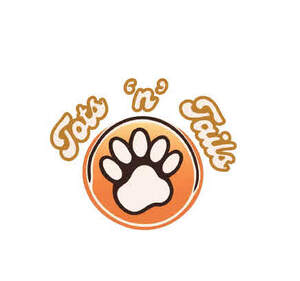

Trade Mark Journal No.2025/032 8 August 2025
UK00004229645 6 July 2025 (18,21,28,31)

- Class 18
- Electronic pet collars; Collars for pets; Clothing for pets; Pets (Clothing for -); Dog leashes; Animal leashes; Clothing for domestic pets; Dog clothing; Dog collars; Cat collars; Dog apparel; Pet clothing; Raincoats for pet dogs; Pet leads.
- Class 21
- Pet grooming glove; Litter trays for pet animals; Pet paw cleaners, non-electric; Animal-activated pet feeders; Pet feeding dishes; Pet feeding bowls; Electronic pet feeders; Pet drinking bowls; Electric pet brushes; Automatic pet feeders; Deshedding brushes for pets; Pet feeding and drinking bowls; Deshedding combs for pets; De-shedding combs for pets; Pet feeding bowls, automatic; Brushes for pets; Trays (Litter -) for pets; Litter trays for pets.
- Class 28
- Pet toys; Toys for pet animals; Toys and playthings for pet animals; Toys for pets; Dog toys; Toys for domestic pets; Toys, games and playthings for pet animals; Pet toys made of rope; Toy dogs.
- Class 31
- Cat litter; Cat litters; Cat biscuits; Cat food; Animal litter for cats; Litter for cats; Kitty litter; Food for cats; Cat treats [edible]; Pet food for dogs; Foodstuffs for cats; Dog food; Dog biscuits; Biscuits (Dog -); Canned foodstuffs for cats; Pet food; Food (Pet -); Dog foods; Litter for animals; Catnip; Foods containing chicken for feeding cats; Foodstuffs for pet animals; Dog treats [edible]; Edible dog treats; Pet foodstuffs; Food for dogs; Pet foods; Biscuits for dogs; Edible pet treats.
Isaiah Ojo